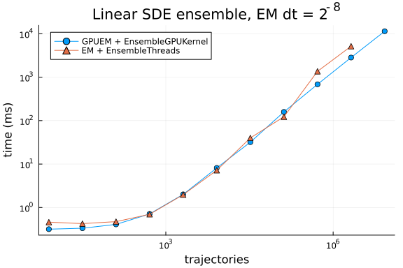

Linear SDE Ensemble — GPUEM vs EnsembleThreads
Linear geometric Brownian motion ensemble from Utkarsh et al., Comput. Methods Appl. Mech. Eng. 428 (2024) 117109 (arXiv:2304.06835; artifacts).
$
dX = p\, X\, dt + q\, X\, dW, \qquad X_0 = (0.1, 0.1, 0.1),\quad p = 1.5,\quad q = 0.01,\quad t \in [0, 1] $
Fixed-step Euler–Maruyama with $dt = 2^{-8}$. GPU uses GPUEM + EnsembleGPUKernel in Float32; CPU uses EM + EnsembleThreads in Float64, matching the paper scripts.
using Printf
using CUDA
using DiffEqGPU, StochasticDiffEq, StaticArrays
using Plots
@assert CUDA.functional() "This benchmark requires a functional CUDA GPU"
println("GPU: ", CUDA.name(CUDA.device()))
const BACKEND = CUDA.CUDABackend()
const KERNEL = EnsembleGPUKernel(BACKEND, 0.0)
gr()GPU: Tesla V100-PCIE-32GB
Plots.GRBackend()f(u, p, t) = p[1] * u
g(u, p, t) = p[2] * u
function make_sde_ensemble(; T::Type = Float32)
u0 = SVector{3, T}(T(0.1), T(0.1), T(0.1))
tspan = (zero(T), one(T))
p = SVector{2, T}(T(1.5), T(0.01))
prob = SDEProblem{false}(f, g, u0, tspan, p; seed = 1234)
return EnsembleProblem(prob, safetycopy = false)
end
function min_seconds(fn; warmup = 1, samples = 5)
for _ in 1:warmup
fn()
end
ts = Vector{Float64}(undef, samples)
for i in 1:samples
ts[i] = @elapsed fn()
end
return minimum(ts)
end
function time_sde(n, ensemblealg, alg; T = Float32)
ens = make_sde_ensemble(; T)
dt = T(1 // 2^8)
run = if ensemblealg isa EnsembleThreads
() -> (solve(ens, alg, ensemblealg; trajectories = n, save_everystep = false,
adaptive = false, dt = dt); nothing)
else
() -> (CUDA.@sync solve(ens, alg, ensemblealg; trajectories = n,
save_everystep = false, adaptive = false, dt = dt); nothing)
end
return min_seconds(run)
endtime_sde (generic function with 1 method)let
ens = make_sde_ensemble()
sol = solve(ens, GPUEM(), KERNEL; trajectories = 4, save_everystep = false,
adaptive = false, dt = Float32(1 // 2^8))
@assert length(sol.u) == 4
println("GPUEM smoke: 4 trajectories, u[end] = ", sol.u[1].u[end])
endGPUEM smoke: 4 trajectories, u[end] = Float32[0.43873417, 0.45378098, 0.441
85403]const TRAJ_GPU = [8, 32, 128, 512, 2048, 8192, 32768, 131072, 524288, 2097152, 8388608]
const TRAJ_CPU = [8, 32, 128, 512, 2048, 8192, 32768, 131072, 524288, 2097152]
t_gpu = Float64[]
t_cpu = Float64[]
for n in TRAJ_GPU
@info "sde gpu" n
push!(t_gpu, time_sde(n, KERNEL, GPUEM()))
end
for n in TRAJ_CPU
@info "sde cpu" n
push!(t_cpu, time_sde(n, EnsembleThreads(), EM(); T = Float64))
endp = plot(TRAJ_GPU, t_gpu .* 1e3; xscale = :log10, yscale = :log10,
xlabel = "trajectories", ylabel = "time (ms)", label = "GPUEM + EnsembleGPUKernel",
marker = :circle, legend = :topleft, title = "Linear SDE ensemble, EM dt = 2^{-8}")
plot!(p, TRAJ_CPU, t_cpu .* 1e3; label = "EM + EnsembleThreads", marker = :utriangle)
p
println("Linear SDE (ms)")
@printf("%10s %12s %12s\n", "N", "GPU", "CPU")
for n in TRAJ_GPU
tg = t_gpu[findfirst(==(n), TRAJ_GPU)] * 1e3
tc = (i = findfirst(==(n), TRAJ_CPU); i === nothing ? NaN : t_cpu[i] * 1e3)
@printf("%10d %12.3f %12.3f\n", n, tg, tc)
endLinear SDE (ms)
N GPU CPU
8 0.387 0.543
32 0.398 0.543
128 0.450 0.680
512 0.755 0.926
2048 1.872 3.435
8192 7.396 13.225
32768 32.596 45.146
131072 160.885 133.396
524288 656.094 1255.722
2097152 2723.116 5063.023
8388608 11012.969 NaN